なので今回は「まよい旅」ではなく、素直に高松の様子をご覧ください。
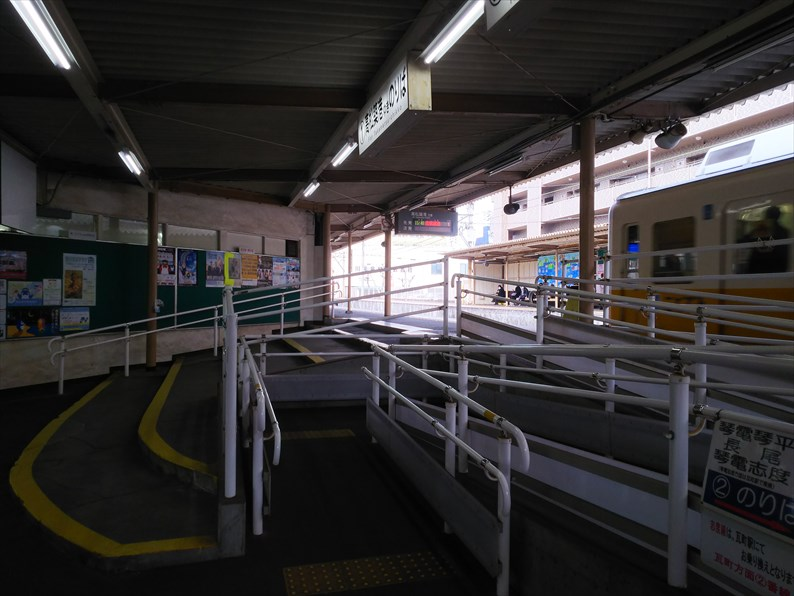
２月１７日（金）
ホテルに荷物を置いてユーザーへ。片原町駅からこ
とでんに乗って向かいます。
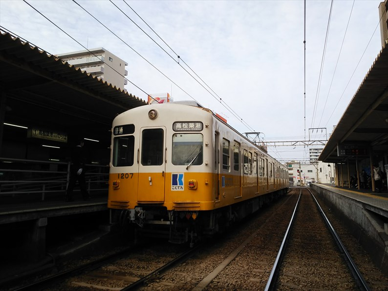
街中にあるのに構内踏切のあるいい感じの駅です。
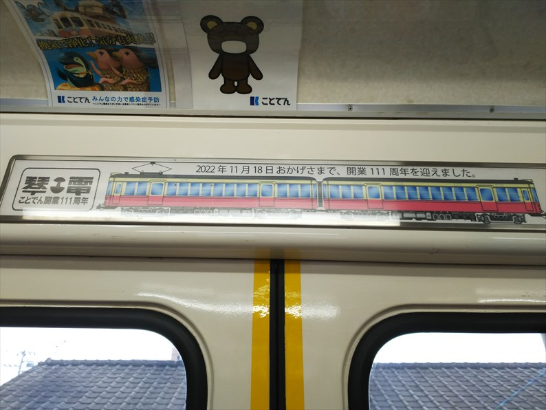
開業１１１年ですか。岩佐模型さんに制作してもら
った元京急２３０系のイラストっすね。
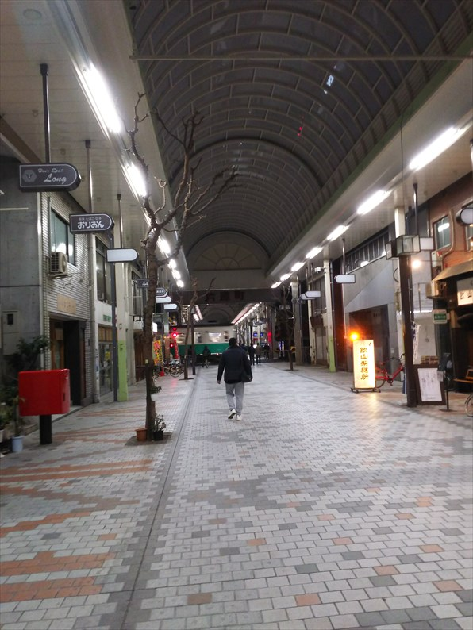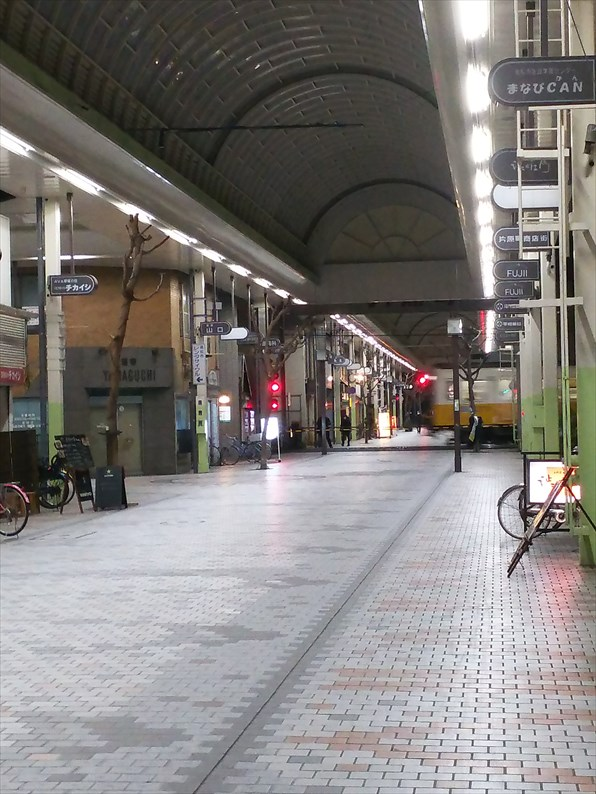
仕事終わって戻ってきました。 商店街ごしのことでん。 高松のメインの商店街なので、まだ活気は残っています。（これでも）
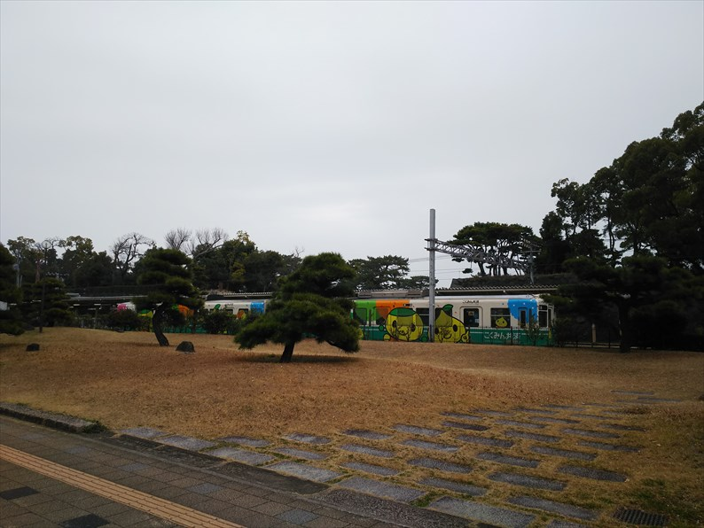
２月１８日（土）
この日は帰るだけ。駅前から高速バスで帰ります。
変わらない高松築港駅。地下化の話もあったようで
すが、立ち消えかな？
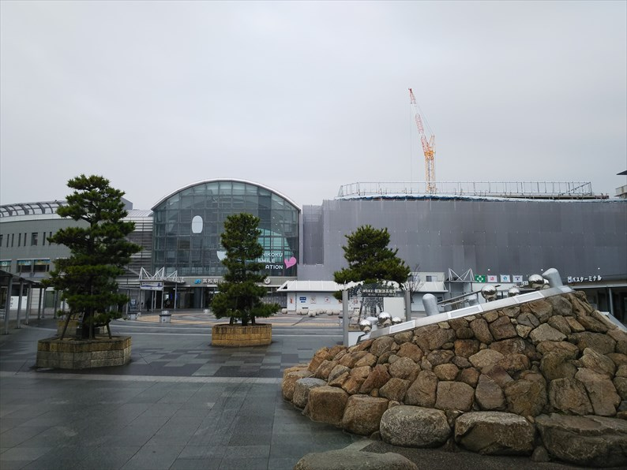
高松駅です。右側の工事中のところは、ミスドやス
ーパーがあって、よく利用したものですが、どう変
わって行くのでしょうか。
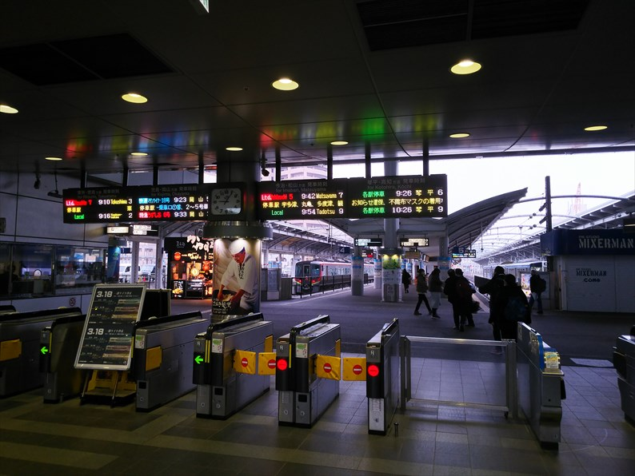
４０年前の高松とは大違いですね。
エキナカにあった讃岐うどんの店も無くなったとい
うことで、なんか世知辛い世の中になったもんです。
平日はすいてる高速バスも、休日は混んでてビック
リ！
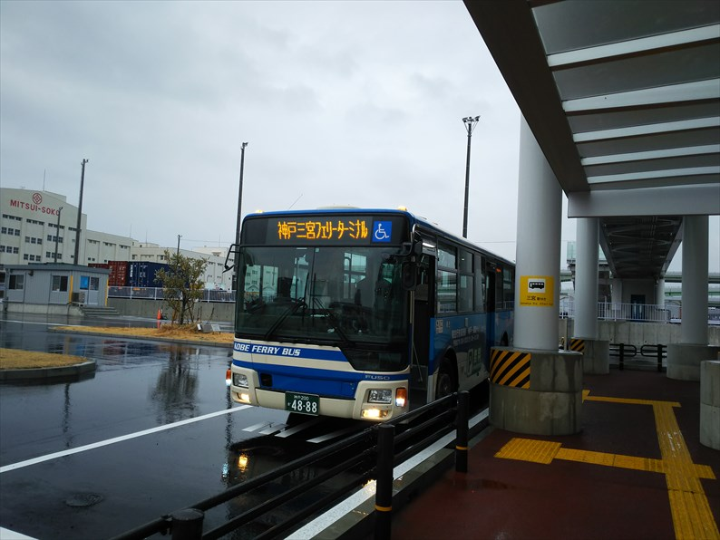
２月１９日（日）
最後の出張は、中２の時の訪問と同じくフェリーで
行くとします。
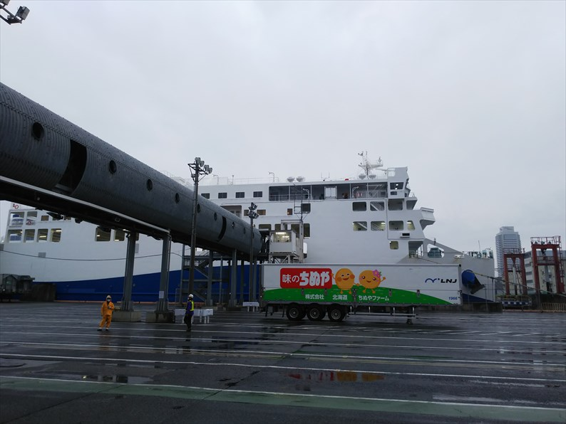
新造船の「あおい」が見えてきました。
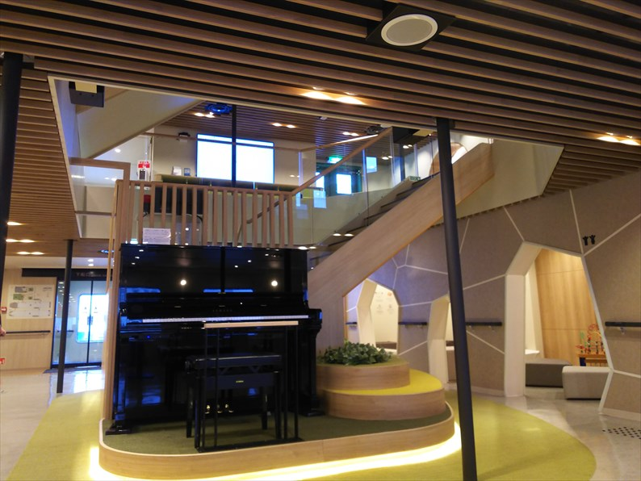
中はピッカピカ！。
ピアノまで置かれてて、かなりおしゃれな感じです。
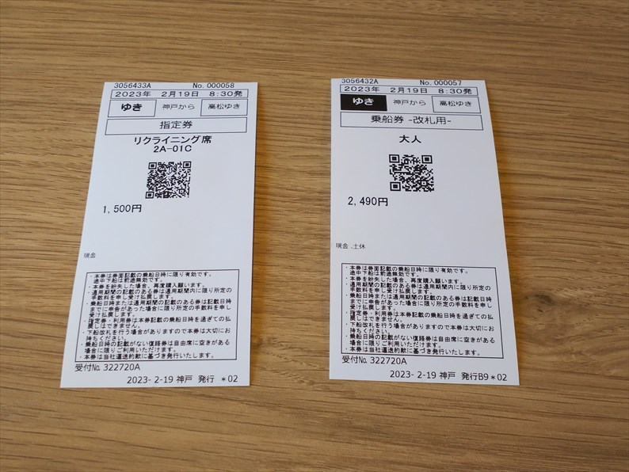
今回は奮発して指定席にしました。
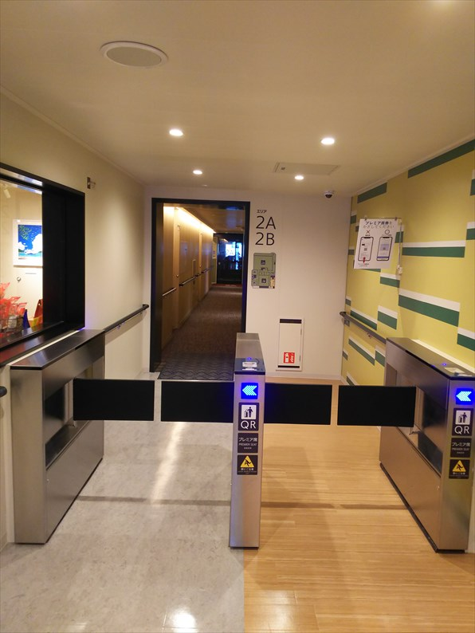
船内に自動改札がっ！
そうなんです。ええクラスのエリアは、ＱＲコードを読ませないと入れません。
世知辛い世の中になったもんです。
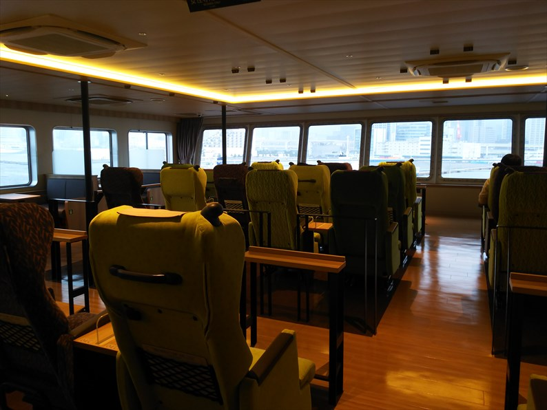
グリーン車並み、とうたってるリクライニング席で
すが、見た目ほど心地よくありませんでした。
ひのとりのプレミアムシートのほうがよっぽど心地
良かったです。
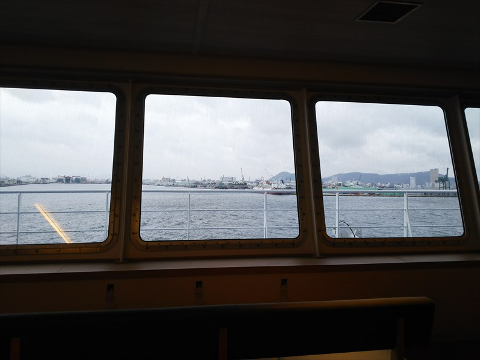
いよいよ出航。
指定席は正面の風景が見えるのがいいです。
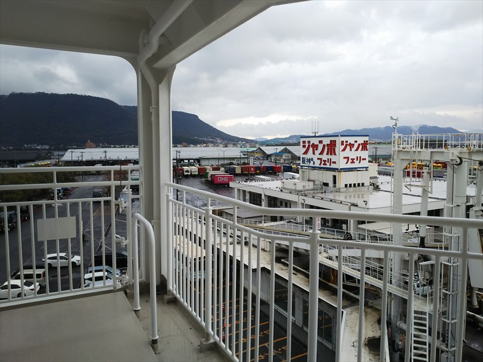
なんだかんだで高松港に到着。
寒いので甲板までは出ませんでしたが、船内には足
湯やデッキ付個室もあるので、また気候のいい時に
乗ってみたいものです。
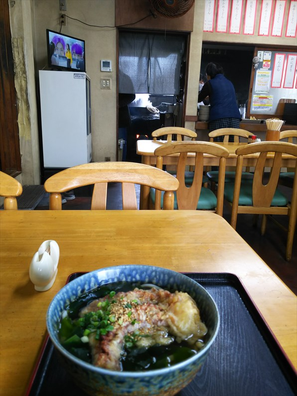
２月２０日（月）
お気に入りやった病院近くのうどん屋。１１年前からすでに老夫婦でやってたの
ですが、老夫婦共々健在でした。
奥に見えるかまどでうどんをゆがいてます。
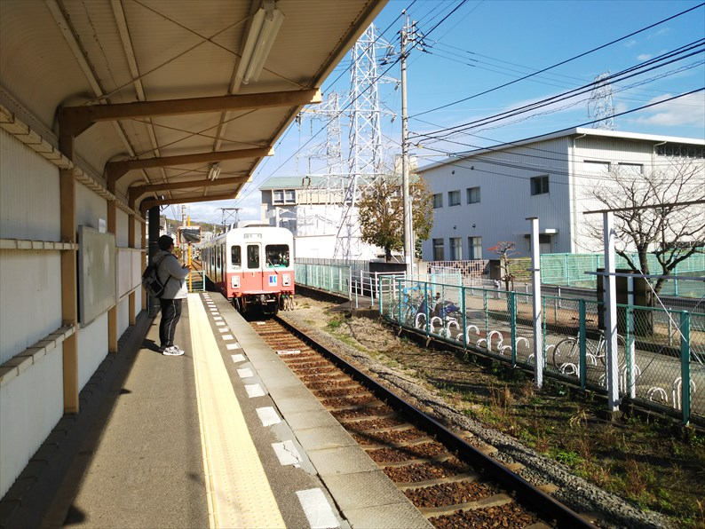
とうとう仕事も終わって、ことでんで帰ります。
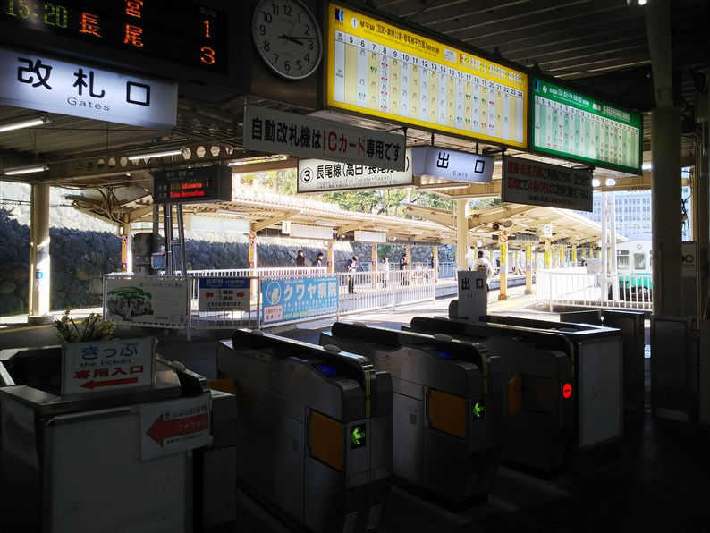
高松築港到着。
４０年前から変わったような変わってないような。